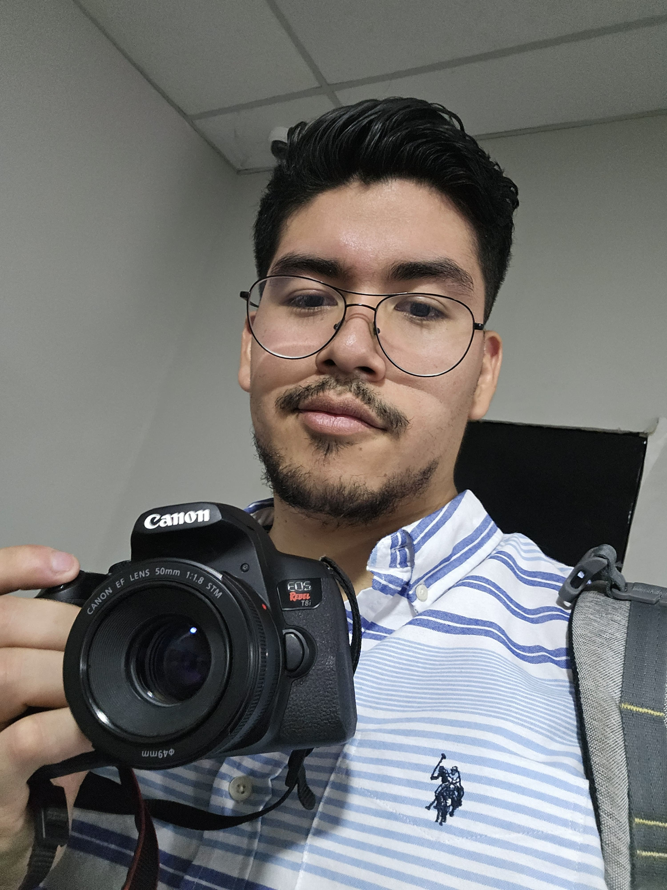

NELSON ESTRADA
Hola! Soy Nek.
Estudio Diseño Gráfico, me especializo en fotografía, After Effects y Animación también soy egresado de la carrera de Mercadeo además de saber sobre barrismo.
Tengo experiencia en motion graphic, fotografía de paisaje, dominio medio de los programas de la suite de Adobe y uno que otro programa de la suite de Adobe,
cursos en línea sobre edición de video y dirección de modelaje, además de dominiar el idioma inglés y francés.
Estudios Realizados
-
Universidad Católica de El Salvador
- Carrera de Mercadeo - Graduado en 2020
-
Academia Europea
- Curso de Francés - Nivel Intermedio - 2020
-
Academia Ascencio Kunfu
- 5 años de curso intensivo de defensa personal y cinta verde - 2017
-
Prácticas de Barrismo
- Nivel Intermedio - 6 meses - Café Cadek - 2020
-
Curso de Animación en After Effects - 2023
- Duración: 3 meses
-
Certificados de Ley contra el Lavado de Dinero
- Asociación de Abogados de El Salvador - Especializado en GAFICLAT - 2023